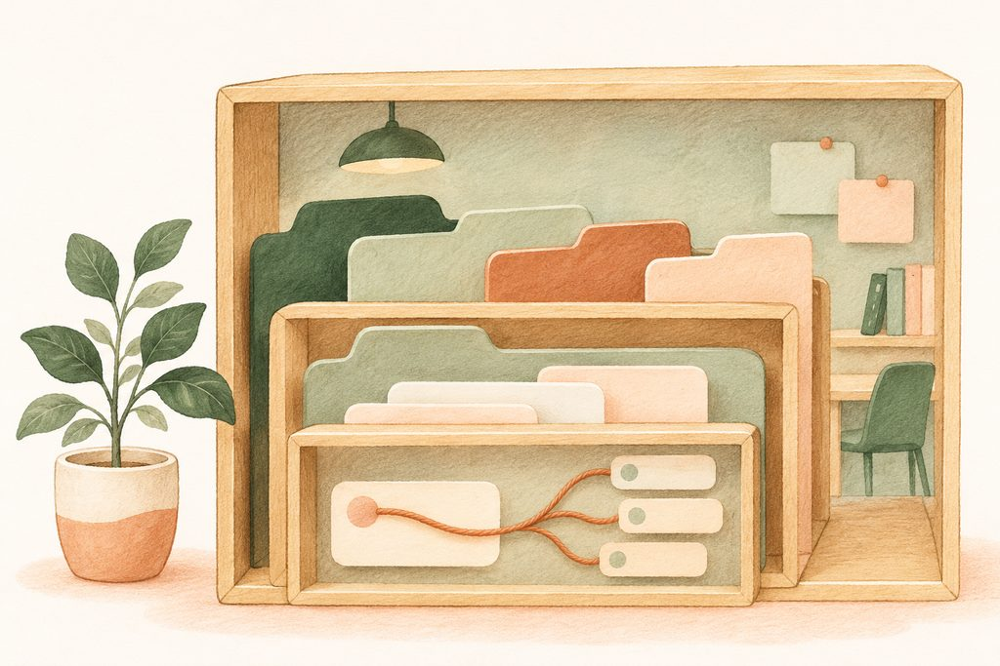
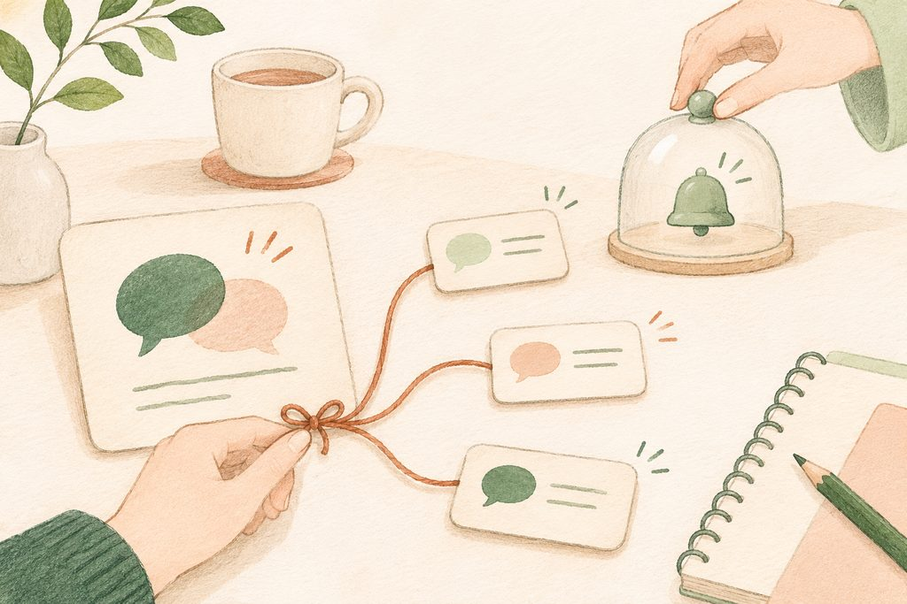
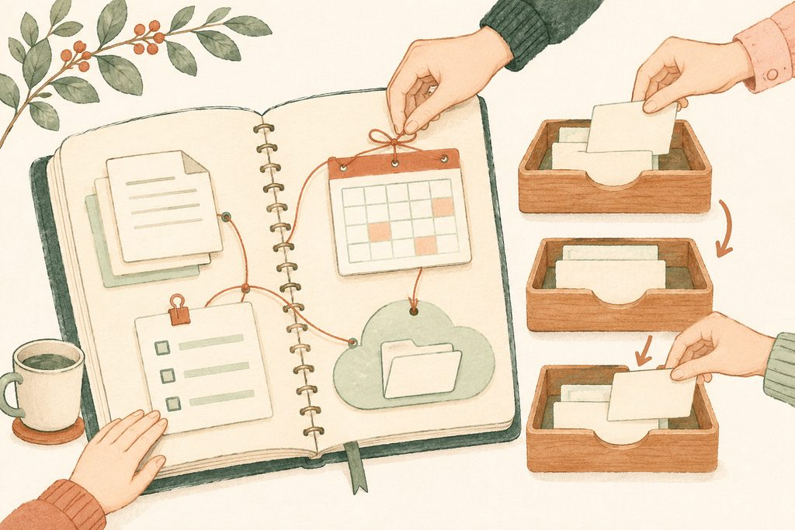
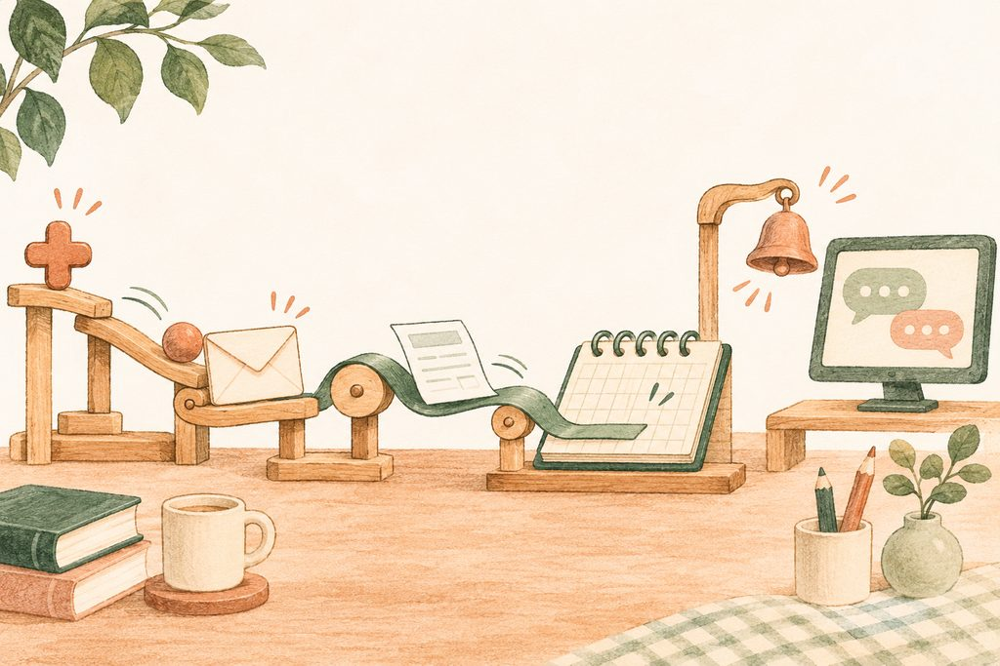

업무 연락에
따로 자리를 마련합니다
“그 내용, 어디에서 이야기했더라?”
업무 대화를 찾느라 시간을 쓰셨다면, 대화가 쌓이는 방식을 바꾸어 보세요.
업무 연락을 개인 메신저에서 분리하는 일은 현장에서 가장 많이 찾으시는 주제입니다. 개인적인 대화와 업무 요청이 섞이면, 쉬는 시간에도 일의 알림이 따라오고 중요한 결정은 개인 대화방 안에 묻히기 쉽습니다.
구글 챗과 슬랙은 업무용 대화를 모으는 공간입니다. 이번 복습에서는 슬랙을 중심으로, 대화가 다음 사람에게도 도움이 되는 기록이 되도록 사용하는 방법을 익힙니다. 새로운 도구를 설치하는 것만큼 중요한 것은 동료들과 같은 규칙으로 사용하는 일입니다.
설치하고, 초대받은 작업 공간으로 들어갑니다
- 슬랙 공식 웹사이트에서 웹으로 시작하거나 컴퓨터·휴대폰용 앱을 설치합니다.
- 기관에서 받은 초대 링크를 열고, 업무용으로 사용하는 이메일 계정으로 참여합니다.
- 들어온 워크스페이스가 맞는지 확인하고 공지 채널의 안내를 먼저 읽습니다. 이미 작업 공간이 있다면 새로 만들 필요가 없습니다.
알림을 받는 시간도 함께 정하세요. 업무 대화는 근무시간 안에서 울리도록 하고, 긴급 연락은 어떤 경로를 쓸지 별도로 약속합니다. 채널 이름, 답글 방식, 결정 사항을 남기는 위치까지 맞추면 한 달 뒤에도 대화를 찾기가 쉬워집니다.
큰 작업 공간 안에,
주제와 대화가 들어 있습니다
슬랙이라는 이름은 ‘모든 대화와 지식의 검색 가능한 기록’(Searchable Log of All Conversation and Knowledge)으로 풀이됩니다. 이름에 담긴 생각처럼, 슬랙의 구조는 모두 나중에 찾기 위한 것입니다.

“워크스페이스, 채널, 메시지, 스레드, 답글.
이 구조로 일을 하셔야 됩니다.”강의의 핵심 문장
큰 공간에서 작은 답글까지
아래 네 단계를 차례로 눌러 보세요.
업무 대화가 모이는 가장 큰 단위입니다. 여러 워크스페이스에 참여하고 서로 오가며 사용할 수 있습니다.
이름만 보아도
대화의 목적이 보여야 합니다
채널은 주제별 대화방입니다. 검색하려면 먼저 이름에 규칙이 있어야 합니다. ‘접두어 + 내용’으로 이름을 지으면 목록만 보아도 어디에서 이야기할지 짐작할 수 있습니다. 접두어와 이름의 규칙은 기관에서 함께 정합니다.
공지-전체안내전체 직원이 확인할 공지팀-운영지원팀 안에서 함께 진행하는 업무사업-여름프로그램사업의 준비부터 마무리까지문의-전산도움반복되는 질문과 해결 과정특별한 이유가 없으면 공개 채널로 만듭니다. 공개란 인터넷 전체에 공개한다는 뜻이 아니라, 워크스페이스 안의 구성원이 채널을 찾고 참여할 수 있다는 뜻입니다. 새로 온 직원도 지난 대화를 읽으며 일의 배경을 이해할 수 있습니다.
두 사람이 따로 회의했더라도 결론은 관련 채널에 남겨 주세요. 무엇을 결정했는지, 누가 무엇을 언제까지 하는지 적어 두면 인수인계가 한결 쉬워집니다.
같은 결정, 어디에 남기면 좋을까요?
“그때 이야기한 대로 진행해 주세요.”만 남으면, 나중에 합류한 동료는 결정 내용과 배경을 다시 물어야 합니다.
답글은 원래 메시지 아래에,
호출은 필요한 사람에게
채널에 새 메시지로 답을 이어 쓰기보다 원래 메시지의 스레드에 답합니다. 스레드는 실타래처럼 하나의 맥락을 한 묶음으로 엮는 답글 공간입니다.
여러 업무가 동시에 오가도 질문과 답을 따로 모을 수 있습니다. 글을 쓰는 중 줄을 바꾸려면 Shift + Enter를 누르세요.

답글을 스레드에 남겨 보세요
이 페이지 안에서만 동작하는 연습입니다. 실제 슬랙에 전송되지 않습니다.
원래 메시지 아래의 답글
실제 업무 정보 대신 연습 문장을 써 주세요.
멘션은 누구에게 알릴지 정하는 표시입니다
| 표시 | 부르는 대상 |
|---|---|
@이름 | 선택한 한 사람 |
@channel | 이 채널의 모든 구성원 |
@here | 이 채널에서 지금 접속해 있는 구성원 |
@everyone | 워크스페이스 전체 구성원. 일반 채널에서만 사용합니다. |
‘일반 채널’은 처음부터 전체 구성원이 들어 있는 기본 채널을 뜻합니다. 채널 이름이 바뀌어 있을 수도 있습니다. 실제 알림은 개인 알림 설정과 사용 권한의 영향을 받습니다.
해당 담당자 한 사람을 지정하면 됩니다. 채널 전체를 부를 필요가 없습니다.
누가 어떤 일을 하는지,
어디에서 일하는지 보이게 합니다
프로필에는 이름·직함·사진을 채워 주세요. 직함도 검색에 쓰이므로 담당 업무를 찾는 단서가 됩니다. 처음 함께 일하는 동료가 메시지를 보았을 때 누구인지 알아볼 수 있도록 작성합니다.
프로필의 상태에는 회의 중, 외근 중처럼 현재 상황을 표시해 보세요. 상태와 알림 일시 중지는 별개이므로, 방해받지 않아야 할 시간에는 알림 설정도 함께 확인합니다.
자주 가는 채널을 위로
즐겨찾기에 추가해 목록 위쪽으로 올리거나, 새 섹션을 만들어 업무별로 채널을 묶습니다. 내 화면을 정리하는 일이므로 다른 동료의 목록을 바꾸지는 않습니다. 사용자 지정 섹션은 유료 플랜에서 사용할 수 있습니다.
디렉터리에서 한곳에 찾기
사람·채널을 찾는 디렉터리에서 동료의 프로필을 확인하고 필요한 채널을 탐색해 보세요. 화면에 따라 ‘디렉터리’, ‘사람’, ‘채널’ 또는 ‘더 보기’ 안에 표시될 수 있습니다.
끝난 채널은,
지우기보다 보관합니다
사업이 끝나 더 이상 쓰지 않는 채널은 보관합니다. 보관한 채널도 기록이 남아 검색할 수 있습니다. 채널 목록은 정리하면서, 다음 사업에 참고할 대화는 남기는 방법입니다.
보관
새 대화는 멈추고 지난 기록을 찾아볼 수 있게 합니다. 일반 멤버도 권한 설정이 허용하는 범위에서 보관할 수 있습니다.
삭제
워크스페이스 소유자·관리자만 할 수 있습니다. 채널의 대화 기록까지 영구히 사라지므로, 꼭 삭제해야 할 때만 채널 설정에서 진행합니다.
내가 쓴 메시지는 삭제할 수 있습니다. 다만 기관의 설정으로 제한될 수 있습니다. 메시지 하나를 지우는 일과 채널 전체를 삭제하는 일은 다릅니다.
보관이 무기한 보존을 뜻하지는 않습니다
무료 플랜에서는 1년이 지난 메시지·파일이 차례로 영구 삭제됩니다. 보관한 채널에도 보존 정책이 적용됩니다. 오래 참고할 공식 문서와 업무 기록은 기관에서 정한 보존 위치에도 정리하세요.
공식 도움말: 무료 워크스페이스의 제한 ↗비영리 지원은 승인을 받은 뒤 적용됩니다
슬랙의 비영리 프로그램 승인을 받은 워크스페이스는 회원 250명 이하이면 Pro 플랜을 무상으로 이용할 수 있습니다. 그보다 크면 Pro 플랜은 85% 할인입니다. Business+ 플랜은 규모와 관계없이 85% 할인이 적용됩니다.
기관이 비영리라는 이유만으로 자동 적용되는 것은 아닙니다. 관리자와 함께 자격과 신청 절차를 확인해 주세요. 공식 도움말: 비영리 지원 신청 ↗
대화 옆에 안내서를 두고,
해야 할 일을 함께 봅니다

캔버스 · 채널에 붙여 두는 문서
채널의 목표, 일하는 규칙, 참고 링크를 캔버스에 적어 두고 채널에서 쉽게 찾도록 고정합니다. 처음 온 동료가 “이 채널은 어떻게 쓰나요?”라고 물을 때 함께 읽을 수 있는 안내서가 됩니다.
캔버스 편집 중 /를 누르면 제목이나 표 같은 서식과 요소를 넣을 수 있습니다. 공지 메시지마다 같은 설명을 반복하기보다, 기준이 되는 문서를 정리해 두세요.
리스트 · 동료와 함께 관리하는 할 일
할 일에 담당자와 상태를 넣고, 필터로 완료·미완료를 나누어 봅니다. 보기 방식을 보드로 바꾸면 진행 전 → 진행 중 → 완료의 칸반보드로 흐름이 보입니다.
동료도 항목과 담당자를 넣게 하려면 리스트 공유에서 ‘누구나 편집’을 켭니다. 편집이 허용되는 공유 대상을 확인한 뒤 적용하세요. 읽기 권한만 있으면 항목을 수정할 수 없습니다. 리스트는 유료 플랜 기능입니다.
업무 카드의 다음 상태를 눌러 보세요
연습용 카드입니다. 이동한 위치에서 현재 진행 상황을 확인할 수 있습니다.
진행 전
진행 중
완료
현재 상태: 진행 전
문서와 일정의 소식도
슬랙에서 이어 받습니다
앱 메뉴에서 구글 드라이브와 구글 캘린더를 슬랙에 추가합니다. 업무에 사용하는 구글 계정으로 연결하면 문서와 일정 사이를 오가는 수고를 줄일 수 있습니다.
- 구글 드라이브: 연결된 공유 문서의 댓글 알림을 슬랙에서 받아 보고 해당 문서로 이동합니다.
- 구글 캘린더: 연결한 캘린더의 일정을 슬랙에서 확인하고, 중요한 기관 일정의 알림을 받아 봅니다. 어떤 캘린더를 연결했는지 먼저 확인하세요.
- 슬래시 명령: 메시지 창에서 /를 누르면 연결한 앱에서 제공하는 기능을 볼 수 있습니다. 일정 만들기나 문서 만들기처럼 제공되는 명령을 골라 실행합니다.
같은 /라도 캔버스 안에서는 문서 서식을, 메시지 창에서는 명령과 앱 기능을 여는 데 쓴다는 점을 기억하세요. 표시되는 기능은 설치된 앱과 권한에 따라 달라집니다.
앱을 연결하는 흐름을 익힙니다
실제 화면의 메뉴 이름과 위치는 기기·버전에 따라 조금 다를 수 있습니다.
1 / 4 단계
무엇이 일어나면,
무엇을 하게 할까요?
워크플로는 슬랙의 자동화입니다. 강의에서는 에이전트 도구 › 워크플로 경로로 열었습니다. 화면에 따라 워크플로 관련 메뉴의 위치가 다를 수 있습니다. 워크플로 빌더는 유료 플랜인 Pro 이상에서 사용할 수 있습니다.
자동화는 두 가지를 정하는 일에서 시작합니다. 방아쇠(이벤트·트리거)는 시작하는 조건이고, 동작(단계)은 그 뒤에 할 일입니다.
“방아쇠를 당겼을 때 풍선이 나올 거냐,
총알이 나올 거냐.”시작 조건과 그 뒤에 실행할 동작을 구분하는 강의의 비유

강의에서 만든 세 가지 흐름
- 새 멤버 환영: 채널에 누가 들어오면 → 환영 메시지를 보냅니다. 이름과 채널을 변수로 넣으면 실제 참여자와 채널 정보가 자동으로 들어갑니다.
- 이모지로 실행: 약속한 이모지 반응이 달리면 → 반응한 사람을 지정해 해당 메시지의 스레드로 답글을 보냅니다.
- 링크로 신청: 워크플로 링크를 누르면 → 신청 양식이 열리고 → 제출한 응답이 구글 시트에 자동으로 쌓입니다. 질문을 만들고 각 응답을 시트의 열과 연결합니다.
자주 쓰는 👍를 방아쇠로 고르면 의도하지 않은 실행이 잦아질 수 있습니다. 강의의 더하기 기호 같은 잘 쓰지 않는 이모지를 고르고, 어떤 뜻으로 쓰는지 직원끼리 먼저 약속하세요.
방아쇠를 고르면 동작이 이어집니다
조건을 고르고 ‘이 흐름 연습하기’를 눌러 결과를 확인하세요.
워크플로 사용 권한과 앱 연결 가능 여부는 관리자의 설정을 따릅니다. 공식 도움말: 플랜별 기능 ↗
시트에 신청이 들어오면,
담당 채널에 알려 줍니다
웹훅은 다른 서비스가 슬랙에 알림을 보내도록 연결하는 통로입니다. 강의에서는 앱스 스크립트로 구글 시트와 슬랙의 웹훅을 이어, 시트에 글을 쓰면 채널에 바로 알림이 오게 했습니다.
예를 들어 신청이 접수되면 담당자가 있는 채널에 “새 신청이 있습니다”라는 알림을 보내는 구조로 응용할 수 있습니다. 워크플로의 신청 양식과 마찬가지로, 어떤 사건을 시작점으로 삼을지 먼저 정하면 이해하기 쉽습니다.
연결 작업은 담당자와 함께 설정합니다. 메시지가 도착할 채널, 알릴 내용, 실제 시작 조건을 정하고 시험용 데이터로 확인한 다음 업무에 적용하세요.
자주 묻는 질문
강의 중 나왔던 질문입니다. 질문을 누르면 답변이 펼쳐집니다.
이 이름이 왜 ‘스레드’예요?
실타래처럼 한 맥락의 대화를 한 묶음으로 엮는다는 뜻입니다. 답글을 스레드로 모아 두면 나중에 그 일의 흐름을 통째로 찾을 수 있습니다. 새 메시지마다 답을 흩어 놓지 않고 원래 메시지 아래에 이어 쓰는 이유입니다.
채널을 삭제하려면 어떻게 하나요?
일반 멤버에게는 채널 삭제 기능이 없고, 권한이 허용된 경우 보관할 수 있습니다. 보관한 채널도 검색에 나옵니다. 꼭 지워야 하면 워크스페이스 소유자·관리자가 채널 설정에서 삭제할 수 있지만, 대화 기록까지 영구히 사라집니다. 기관의 기록 보존 기준을 먼저 확인해 주세요.
세 문제로
한 번 더 기억해 봅니다
답을 고르고 확인 버튼을 눌러 주세요. 해설을 읽고 다시 풀어 보셔도 좋습니다.
오늘은, 작은 규칙 하나를
동료와 함께 시작해 보세요
모든 기능을 한꺼번에 익히실 필요는 없습니다. 아래 항목을 하나씩 실천하며, 우리 팀이 함께 지킬 대화 규칙을 만들어 보세요.
체크한 항목은 이 브라우저에 저장됩니다.
다음 동료의 시간을 아껴 주는 일입니다.